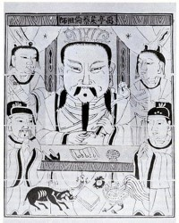

A papírgyártás története |
|||
| Papír feltalálása | A papírmerítés | A papír feltalálása előtt | A papír diadalútja |
 A papír feltalálása
A papír feltalálása
Azt, hogy pontosan hol és mikor találták fel a papírt, a múlt ködébe vész, csak néhány nevet ismerünk a kezdeti időkből. Caj-Lun volt az, aki a hagyomány szerint közbenjárt Ho-ti császárnál annak érdekében, hogy a Kínai birodalomban államilag is serkentsék a papírgyártást. Ez időszámításunk szerint 105-ben történt. A papírmerítés
